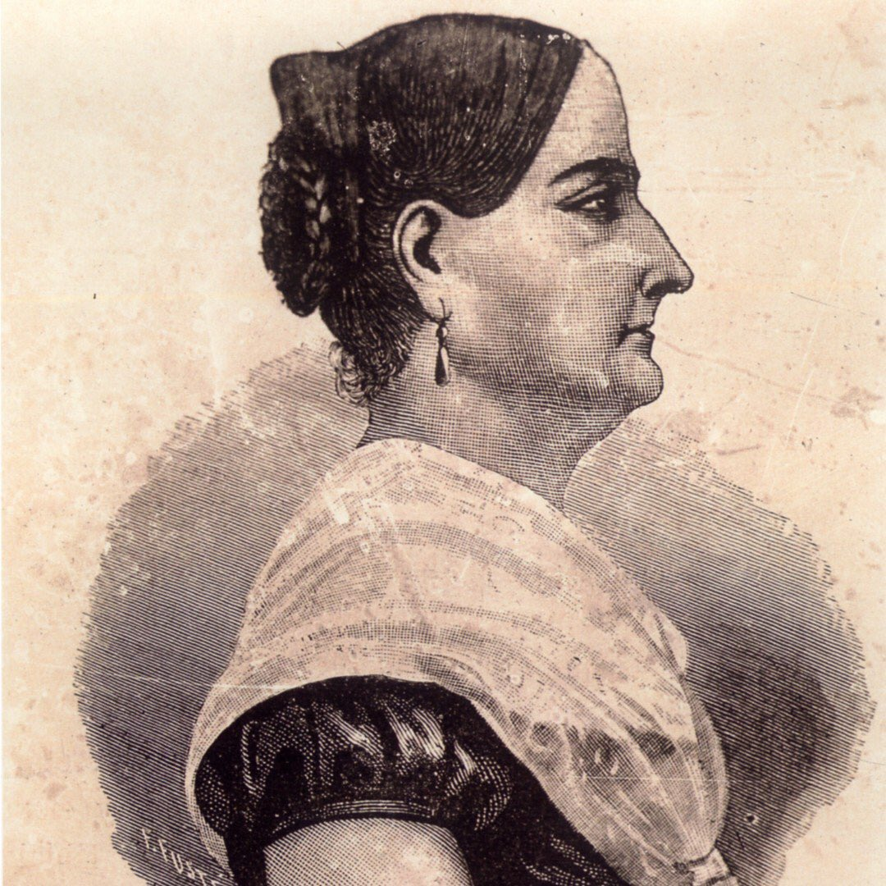
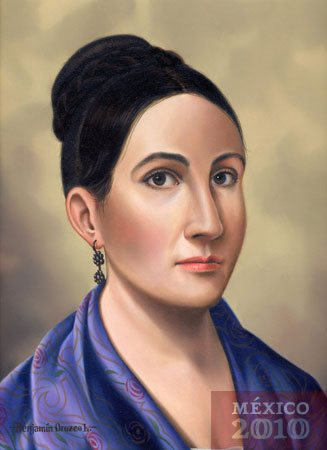

Conoce nuestras redes, El Bachillerato Militarizado, Honra a las mujeres que cambiaron su historia.
Josefa Ortiz de Domínguez nació el 19 de abril de 1773 en Valladolid, Michoacán, México (hoy Morelia). Desde joven, demostró una notable inteligencia y determinación, lo que la llevó a destacarse en su educación y en su vida social.
Aunque no se tienen muchos detalles sobre su educación formal, se sabe que Josefa recibió una sólida instrucción en casa, lo que era común para las niñas de su posición social en ese momento. Demostró una inteligencia notable desde temprana edad, lo que sugiere que pudo haber recibido una educación más avanzada de lo habitual para las mujeres de su epoca.
Se casó con Miguel Domínguez, quien más tarde se convirtió en corregidor de Querétaro. La pareja se estableció en esta ciudad, donde Josefa se destacó no solo como esposa de un funcionario, sino también como una figura influyente en la vida política y social de la región.
En Querétaro, Josefa estableció una red de conspiradores que buscaban la independencia de México del dominio español. Su casa se convirtió en un centro de reunión clandestino para figuras clave como Miguel Hidalgo y Ignacio Allende. Josefa desempeñó un papel activo en la planificación y organización del movimiento independentista.
Por supuesto, aquí tienes algunos de los logros destacados de Josefa Ortiz de Domínguez:
1.-Líder en la Independencia de México: Josefa Ortiz de Domínguez desempeñó un papel crucial en la conspiración para lograr la independencia de México del dominio español. Su casa en Querétaro se convirtió en un punto de encuentro para los líderes revolucionarios, como Miguel Hidalgo y Ignacio Allende.
2.-Organizadora y Coordinadora: Ortiz de Domínguez no solo proporcionó un lugar seguro para planificar la insurrección, sino que también jugó un papel activo en la organización y coordinación de actividades revolucionarias. Su determinación y liderazgo fueron fundamentales para mantener unidas a las diversas facciones del movimiento independentista.
3.-Valentía en la Adversidad: A pesar del riesgo personal y de ser arrestada junto con su esposo, Josefa Ortiz de Domínguez demostró una valentía inquebrantable al negarse a revelar información sobre sus compañeros conspiradores, incluso bajo interrogatorios y torturas.
4.-Legado como Heroína Nacional: Su valentía y contribución a la independencia de México la han convertido en una figura venerada en la historia del país. Es conocida como "La Corregidora", un título honorífico que reconoce su papel como esposa del corregidor de Querétaro y su compromiso con la causa independentista.
5.-Inspiración para las Generaciones Futuras: El legado de Josefa Ortiz de Domínguez continúa inspirando a las generaciones futuras de mexicanos a luchar por la libertad, la justicia y la igualdad. Su ejemplo demuestra que incluso en tiempos de gran adversidad, el coraje y la determinación pueden llevar a grandes cambios históricos.

En 1810, las autoridades españolas descubrieron la conspiración para la independencia de México que se gestaba en Querétaro. La red de conspiradores, que incluía a figuras prominentes como Miguel Hidalgo, Ignacio Allende y Josefa Ortiz de Domínguez, fue objeto de una intensa búsqueda por parte de las autoridades coloniales.
Josefa Ortiz de Domínguez y su esposo, Miguel Domínguez, fueron arrestados el 15 de septiembre de 1810, después de que las autoridades descubrieran pruebas incriminatorias en su contra. El arresto de la pareja envió ondas de choque a través de la comunidad conspiradora y marcó un punto de inflexión en la lucha por la independencia.
Tanto Josefa como su esposo fueron sometidos a interrogatorios y torturas en un intento de obtener información sobre los otros conspiradores y los detalles del plan de insurrección. A pesar de las duras condiciones y la presión, Josefa se mantuvo firme en su lealtad a la causa independentista y se negó a traicionar a sus compañeros.
Después de un juicio sumario, Josefa Ortiz de Domínguez fue condenada a prisión y su esposo fue desterrado. La condena de Josefa fue un duro golpe para el movimiento independentista, ya que su liderazgo y su influencia en la conspiración eran bien conocidos. Sin embargo, su negativa a delatar a sus compañeros conspiradores la convirtió en un símbolo de resistencia y valentía.
Aunque su papel en la independencia de México no fue plenamente reconocido en vida, Josefa Ortiz de Domínguez dejó un legado duradero como heroína nacional y un ejemplo de determinación y coraje en la lucha por la libertad. Su arresto y persecución son recordados como parte de la historia de México y su contribución a la causa independentista sigue siendo celebrada hasta el día de hoy
Aunque su papel en la independencia de México fue fundamental, Josefa Ortiz de Domínguez no recibió un reconocimiento pleno en vida, siendo su contribución eclipsada por la de otros líderes masculinos. Sin embargo, su legado perdura como un símbolo de valentía, determinación y amor por la patria.
Programacion 400 - Bachillerato Militarizado Reynosa